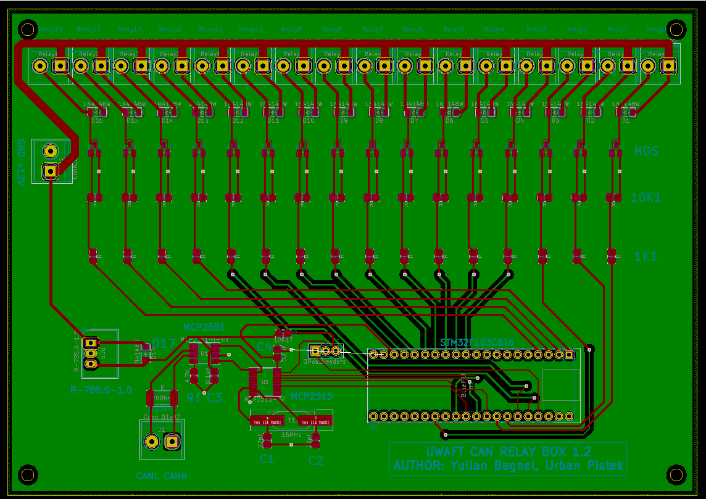
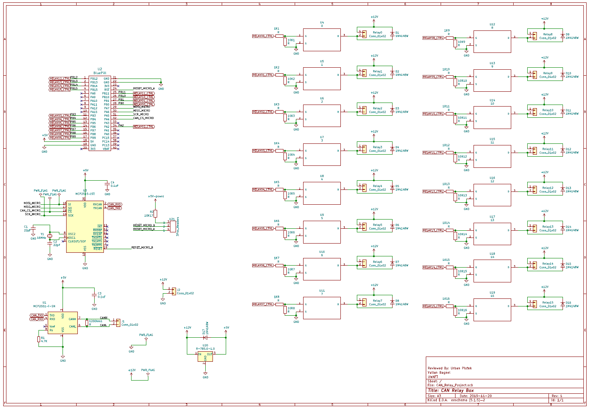
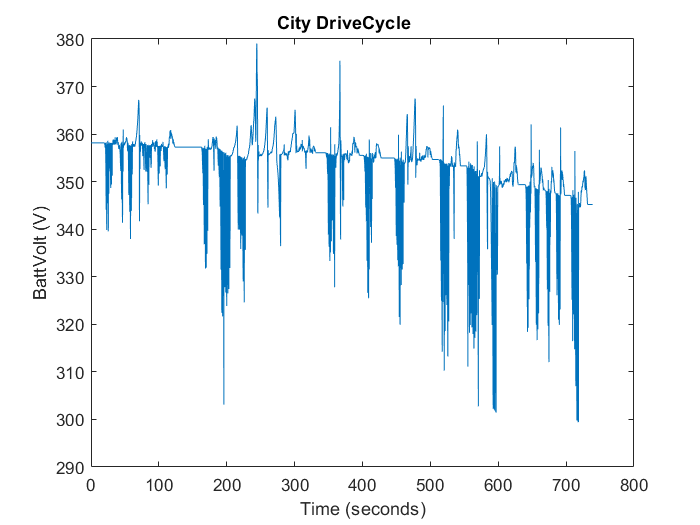
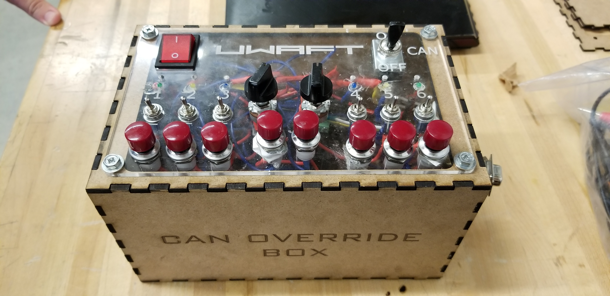

UWAFT EcoCar Student Team
Let me tell you a few things about the student team...
About the Team
The University of Waterloo EcoCAR Team is designing, building, and implementing advanced vehicle technologies into a 2019 Chevrolet Blazer. Advanced technologies include redesigning the powertrain to be HEV, SAE level 2 autonomy, and Carsharing. All while educating the public on hybrid electric vehicles. UWAFT is one of only two Canadian universities competing in the EcoCAR Mobility Challenge; making the competition even more of a unique and exciting experience.
Projects at UWAFT
Let me tell you about some of the things I have worked on...
CAN Controlled Relay PCB
PCB Design | KiCAD | STM32 | Firmware
Lead development of a custom PCB that regulates power components and systems by turning on/off relays to connect to the 12V power source. The PCB has a STM32 board stacked on it to provide the processing and GPIO capabilites along with a CAN transceiver to receive CAN messages and an CAN IC to convert the CAN message to SPI commincation to the STM32 board. The board is capable of controlling up to 15 different relays and was developed in KiCAD. Three boards were soldered by hand and tested using the CANalyzer software to send and receive CAN messages while using a testing harness to verify the relay functionality.
HV & LV System Schematics
HV | LV | Schematic Design | VeSys | Harness Design
Lead the development of vehicle schematics for the vehicle HV and LV systems; included was the HV powertrain system, HVIL (High Voltage Interlock Loop), radars and controllers, powertrain LV and the relay PCB. Schematics were designed using VeSys for all vehcile schematics and KiCAD for PCB layout.
Voltage Ripple Analysis
Matlab | Simulink | Vehicle Models
Collected data from vehicle simulink model on HV battery current and voltage draw over time through various drive cycles. Utilized the data to examine the potiental voltage ripple on the electrical bus possible with the simulated electric powertrain.
CAN Override Tester
Arduino | C++ | Soldering | Electrical
Developed a circuit using an Arduino Mega, CAN shield and passive components for a system that is capable of sending single CAN messages with different data bits that are configured by digital and analog input from the user via switches and potentiometers. The CAN and Arduino were stacked using a prototyping sheild and all switches and LEDs were solder by hand on a custom laser cut box.
